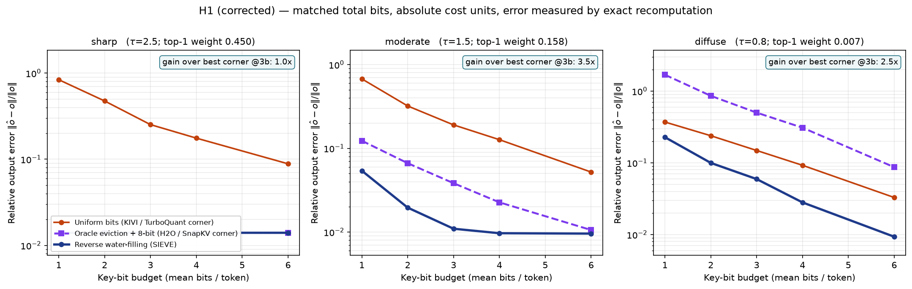
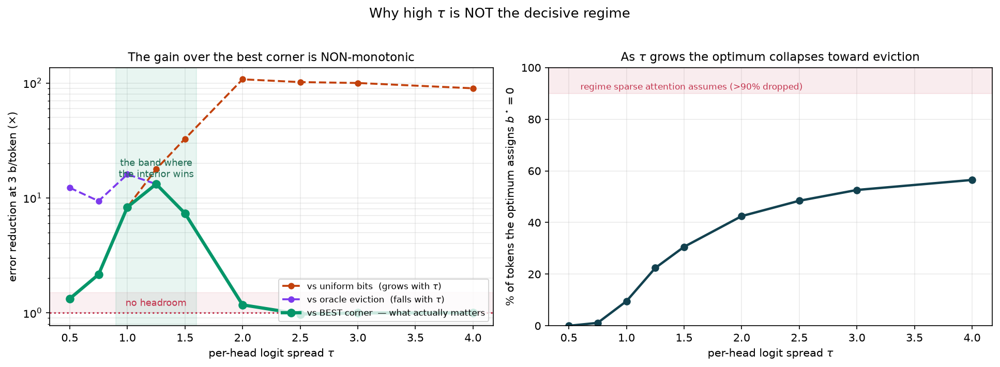

SIEVE: Rate Allocation for KV Caches
Token eviction and cache quantization are the same optimization problem, solved at two opposite corners. The interior dominates both — but only over a bounded regime, and finding that boundary is now the project.
Thesis. Every KV compression method minimizes a reconstruction distortion. Attention does not consume keys; it consumes an output \(o=\sum_i a_iv_i\). Posed against output distortion, KV compression is a rate-allocation problem whose solution is reverse water-filling: the optimal budget for token \(i\) is linear in the log of its attention weight, with the zero-rate case recovering eviction exactly.
Status, and a correction. A second audit pass invalidated v4's central empirical claim. v4 asserted the allocation gain grows with the per-head logit spread \(\tau\). Measured against the best of both corners rather than against uniform bits alone, the gain is non-monotonic: it peaks near \(\tau\approx1.25\) at ~13× and collapses to 1.0× by \(\tau\ge2\), because at high \(\tau\) the optimum itself becomes nearly two-tier and converges to eviction. The project is still viable, but its claim is now narrower and its central risk has moved.
1. The allocation theorem
With \(\hat s_i = s_i+\delta_i\), \(\operatorname{Var}(\delta_i)=\sigma_b^2\), and \(\partial o/\partial s_i=a_i(v_i-o)\), the first-order output error is \(\sum_i a_i^2w_i^2\sigma_{b_i}^2\) with \(w_i=\|v_i-o\|\). Minimizing under \(\sum_ib_i\le B\) gives, above the water level,
$$\boxed{\;b_i^\star=\log_2\!\big(a_iw_i\big)+c\;}$$and \(b_i^\star=0\) otherwise. The eviction cost constant is derived, not chosen: dropping a set \(E\) and renormalizing costs exactly \(\sum_{i\in E}a_i^2\|o_R-v_i\|^2\), so \(c_0=1\) in absolute units, placing eviction on the same axis as every quantized tier.
2. Results, and what the audit changed


| \(\tau\) | vs uniform | vs oracle eviction | vs BEST corner | optimum evicts | reading |
|---|---|---|---|---|---|
| 0.50 | 1.3× | 12.3× | 1.3× | 0% | uniform already near-optimal |
| 0.75 | 2.2× | 9.4× | 2.2× | 1% | marginal |
| 1.00 | 8.3× | 16.0× | 8.3× | 10% | the band that matters |
| 1.25 | 17.8× | 13.2× | 13.2× | 22% | peak |
| 1.50 | 32.7× | 7.3× | 7.3× | 31% | still strong |
| 2.00 | 107.6× | 1.2× | 1.2× | 42% | eviction has caught up |
| 3.00 | 100.0× | 1.0× | 1.0× | 53% | SIEVE ≡ sparse attention |
Two implications, and the second is the more dangerous.
- The decisive regime is intermediate \(\tau\), not high \(\tau\). v4 had this backwards and set its go/no-go threshold at \(\tau>1.5\), which includes a large region where the method is worthless.
- v4's own analytic argument now points the wrong way. It reasoned that top-1 weights of 0.1–0.3 in retrieval heads imply \(\tau\approx2.5\text{–}3\) and concluded those heads sit in the decisive band. On the corrected curve, \(\tau\approx2.5\text{–}3\) is exactly where SIEVE is redundant with sparse attention. If retrieval heads dominate, the project has no headroom against an oracle evictor.

2.1 Results that survived the audit unchanged
- One cascade iteration suffices. Estimating weights from a noisy 2-bit first pass retains 81–101% of the oracle allocation's log-gain. The circularity in \(b_i^\star\) is not an obstacle.
- Eviction is the zero-rate case, with \(c_0=1\) derived. Fig 1's crossing corners confirm that each corner loses badly in the other's regime — the unification stands even where the interior's margin does not.
- QJL deletes tiers from the ladder — and the deletion is \(\tau\)-dependent, which explains §2. Taking the lower convex envelope of the absolute cost curve: at \(\tau{=}1\) QJL's 1-bit tier already costs more than eviction and its 2-bit tier falls off the envelope, while the QJL-free variant keeps all nine tiers. As \(\tau\) rises, tiers drop off from the bottom for both variants — at \(\tau{=}2.5\) the usable set is \(\{0,3,\dots,8\}\) without QJL and only \(\{0,5,\dots,8\}\) with it. That progressive loss of low tiers is the mechanism behind the collapse toward eviction in Fig 4: as the ladder loses rungs it becomes two-tier, and a two-tier allocation is eviction. QJL costs about two extra rungs at every \(\tau\), which is an independent explanation for the deployed backend omitting it.
- Norm correction is a bias-for-variance trade in the wrong direction. Measured on real quantized keys, it moves the shrinkage \(\alpha\) from 0.64 to 0.80 at 1 bit while raising residual variance by 57%. Since selection depends on the score vector only through its ordering, this is the trade M3 says an index should refuse. It is now an ablation rather than a default.
lin_ratio and runs ~1.2–1.6 on synthetic heads, i.e. the expansion overstates the gain by 20–60% and must not be the metric. (ii) Noise constants are measured per head, not imported: \(\sigma_b=\tau\sqrt{c_b}\) assumes iid \(q,k\) coordinates, which real keys violate. (iii) The cost uses \(\operatorname{Var}(\delta)\), not \(\mathbb{E}[\delta^2]\), because a constant logit shift has exactly zero effect on the output — the second moment overstated the 1-bit cost by 37%.
3. Why the nested code is free
Per-token allocation is only useful if a token can be refined mid-step without penalty. Equitz and Cover's successive refinement result establishes that Gaussian sources under squared error are successively refinable: a nested code meets the rate-distortion bound at every layer simultaneously. TurboQuant's random rotation induces a Beta coordinate law converging to \(\mathcal N(0,1/d)\), placing rotated keys in exactly that regime. The rotation that makes the quantizer near-optimal is the rotation that makes it layerable at no cost.
The practical gap is that the residual after Lloyd-Max quantization of a Gaussian is not itself Gaussian, so refinement needs per-cell conditional codebooks — one small Lloyd-Max table per coarse cell, solved offline and data-oblivious. This is the paper's concrete algorithmic contribution and remains untested on real keys.
4. Architecture — the per-head adaptive ladder
The optimum is a staircase whose width is \(\tau/\ln2\) bits, and \(\tau\) varies across heads, so the ladder is calibrated per head from measured \(\tau\). The corrected \(\tau\) story sharpens this from a refinement into the core of the method: heads outside the productive band should not run allocation at all.
STORAGE — one nested code per key, written once. 8b K + FP8 V ≡ k8v4 budget, 2.0x vs BF16.
Layer-major: all L0 bits contiguous across tokens, then L1, then L2 ...
k_i --WHT--> L0 (2b) -> L1 (+1b) -> L2 (+1b) -> L3 (+2b) -> L4 (+2b)
reachable precisions {0, 2, 3, 4, 6, 8}; per-head calibration moves these
DECODE — one fused pass per level, each a contiguous strided read plus a gather.
pass 0 all L tokens read L0 (2b) --> a-hat --> allocate b* = log2(a_i w_i) + c
pass 1-4 shrinking sets read +1/+1/+2/+2 --> refine tokens whose b* exceeds the level
tail b* = 0 page centroids --> low-rank correction
ROUTING (new in v5) — per head, from the offline calibration:
tau < 0.9 -> uniform bits, allocation disabled (interior has no headroom)
0.9-1.6 -> full SIEVE ladder (the productive band)
tau > 1.6 -> two-tier evict + 8-bit (the optimum is already there)That routing table is not a hedge bolted on after a bad result. It is what the corrected theory predicts: the interior is a regime, and a method that claims the whole space when it owns a third of it will be caught. Owning the band explicitly, with a measured boundary, is a stronger paper than an overclaim.
5. Cost model
| Stage | Tokens | Bytes/tok/dim | Total |
|---|---|---|---|
| Pass 0 scan (2 b, all) | \(L\) | 0.250 | 0.250 \(Ld\) |
| Passes 1–4 (refinement) | \(\le0.45L\) | — | 0.115 \(Ld\) |
| FP8 V for retained | \(0.05L\) | 1.000 | 0.050 \(Ld\) |
| Page centroids | \(L/128\) | 1.000 | 0.008 \(Ld\) |
| SIEVE | — | — | 0.423 \(Ld\) |
| Dense k8v4 | \(L\) | 2.000 | 2.000 \(Ld\) |
4.7× fewer bytes at identical memory, with an 8× ceiling set by the mandatory pass-0 scan. The scoring path never dequantizes to BF16 — logits accumulate against packed codes in the rotated basis — so deployed TurboQuant's 10–68% dequantization penalty never touches the critical path.
6. Experiments
7. Score & viability
| Criterion | v4 | v5 | Reasoning |
|---|---|---|---|
| Novelty | 7.5 | 7.0 | The reframing is intact and the dead-zone result is still a genuine sub-finding. Marked down because "the interior dominates both corners" — the sentence the paper is built on — now holds only over a bounded regime, which makes the contribution a characterisation of when allocation pays rather than a claim that it always does. |
| Theoretical rigor | 7.5 | 7.5 | Unchanged and better supported. \(c_0=1\) derived; ladder width \(\tau/\ln2\) predicted and confirmed; and the theory now explains its own boundary — the collapse toward eviction at high \(\tau\) follows from absolute cost units, it is not an empirical surprise. First-order linearization and dropped cross-terms remain untested and are now quantified (lin_ratio 1.2–1.6). |
| Empirical relevance | 8.0 | 6.0 | The largest move, downward. The headline gain shrank from "10–33×, growing with \(\tau\)" to "7–13× over a band, zero outside it", and the regime where retrieval heads most likely sit is the one where the method is redundant. H0 is still cheap and decisive, but it can now return "no headroom" for a much larger share of the parameter space. |
| Positioning | 8.0 | 7.5 | Subsuming eviction as a limiting case is still valuable, and v5 states the validity range rather than implying universality. But the same result that makes the subsumption clean also caps the margin: you cannot both claim sparse attention as a corollary and claim to beat it everywhere. |
| Acceptance probability | 60–68% | 45–55% | Conditional on H0 finding a substantial head population in the productive band, ~60%. Conditional on H0b showing the interior beats a practical evictor at high \(\tau\), ~65% and much of v4's scope returns. If most heads sit above \(\tau=2\) and practical evictors are already close to optimal, this becomes a workshop paper on when allocation does and does not pay — still worth writing, not at this venue. |
8. The three ways this dies
- Real heads sit above the band. The corrected curve is gone by \(\tau\approx2\), and the sharpness of retrieval heads suggests that is where they live. H0 settles it in a day; H0b determines whether it is fatal or survivable.
- Successive refinability fails at finite \(d\) with scalar quantizers. Equitz–Cover is asymptotic and assumes optimal vector quantization; TurboQuant uses per-coordinate Lloyd-Max at \(d{=}128\), and the ladder stacks four refinement boundaries. If nesting costs 20%, per-token allocation stops being free.
- A reviewer reads it as classical theory in a transformer costume. The defense is that the reframing predicts, and its predictions have survived contact: the ladder width, the QJL dead zone, the norm-correction trade, and — after correction — its own regime boundary. A framework that predicted where it would stop working is harder to dismiss than one that claimed everything.
v5 supersedes v4. Corrected in this revision: the \(\tau\) story (§2, Fig 1 and Fig 4 regenerated with absolute cost units, no cost clamp, and gains measured against the best corner), the addition of H0b, the per-head routing table in §4, and the scoring. Carried forward: the allocation theorem, successive refinability, the QJL dead-zone finding, and the cascade result. Figures come from h0/scripts/regen_figs.py; all simulation uses the real TurboQuantmse quantizer (rotation, converged Lloyd-Max, optional norm correction) with error measured by exact recomputation. No result has yet been validated against a real KV cache. Deployment claims — the omission of QJL, the meaning of norm correction, accuracy and throughput against FP8 and BF16 — come from the vLLM project's May 2026 evaluation and the merged attention-backend implementation.